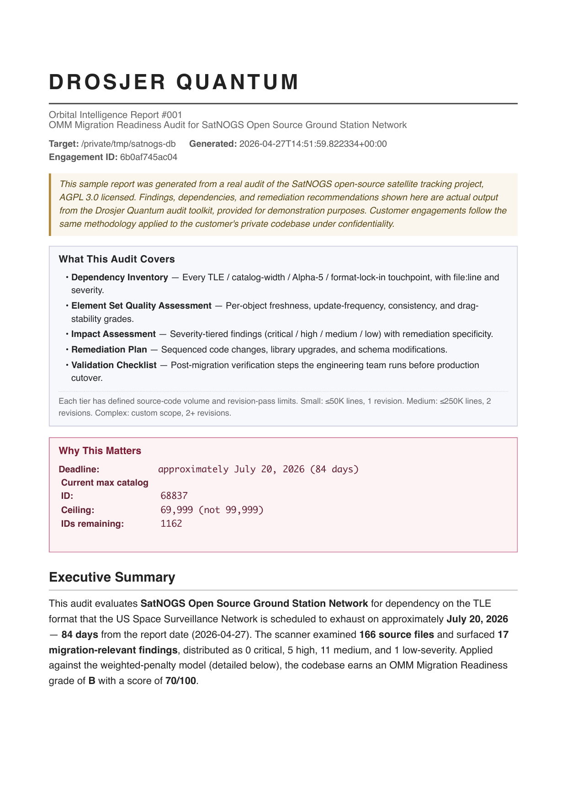

Orbital Data Infrastructure
The US Space Surveillance Network will exhaust all 5-digit catalog numbers. Every system dependent on TLE format stops working for newly cataloged objects. We audit your migration readiness and deliver a remediation plan in 5 business days.
Request an AuditThe real ceiling. Not 99,999. Five-digit catalog numbers exhaust at 69,999 due to the Alpha-5 encoding boundary.
Current count. New objects are cataloged daily. The buffer is measured in weeks, not months.
How long OMM format has been available. CelesTrak published it in May 2020. Most pipelines still parse TLE.
A Drosjer Quantum Orbital Intelligence Report delivers:
Delivered in 5 business days from codebase access. Engagement Methodology →

Download Sample Report #001 (SatNOGS audit, PDF)Sample report shown is from a Small-tier audit ($2,500 scope). Medium and Complex tier deliverables expand the methodology to multi-pipeline architectures with deeper element set quality assessment and additional remediation specificity.
$2,500
Single pipeline, <50 tracked objects
≤50,000 lines scanned · 1 revision pass
Medium$5,000
Multiple pipelines, 50–500 tracked objects
≤250,000 lines scanned · 2 revision passes
Complex$8,000–12,000
Enterprise, CI/CD, compliance
Custom scope · 2+ revision passes
Invoicing available. Net-15 terms.
Drosjer Quantum builds orbital data infrastructure. Our pipelines ingest OMM data from CelesTrak and Space-Track, score element set quality across the active satellite catalog, and detect TLE format dependencies in operational codebases.
Founder: Vilhelm Drosjer · Bergen, Norway / United States.